Easily made with a pressure cooker, the mixture of rice and ribs is easy to cook, but also full of flavor. This delicious one pot meal suits a great family dinner.
| 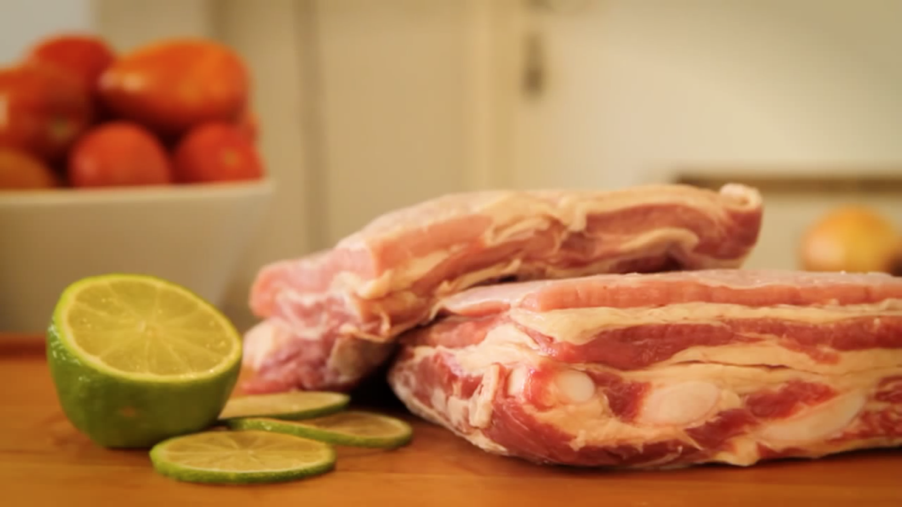 | 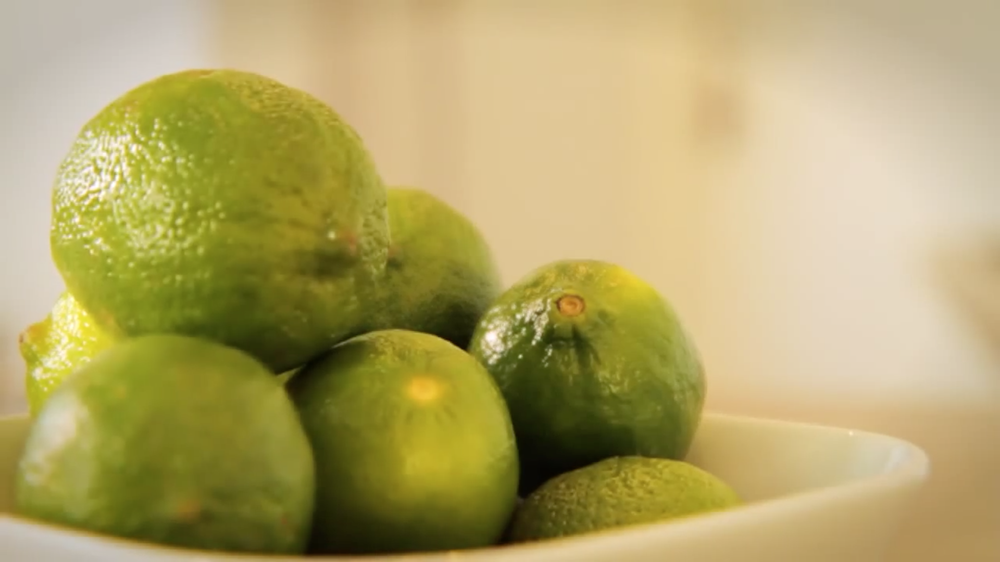 | 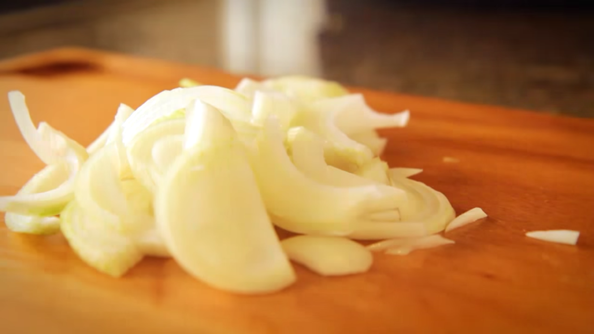 | 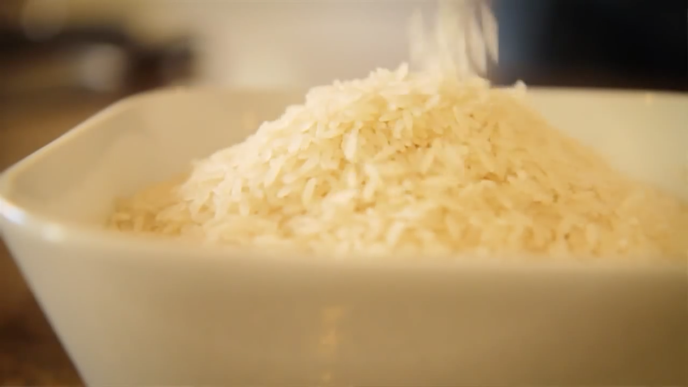 |
| 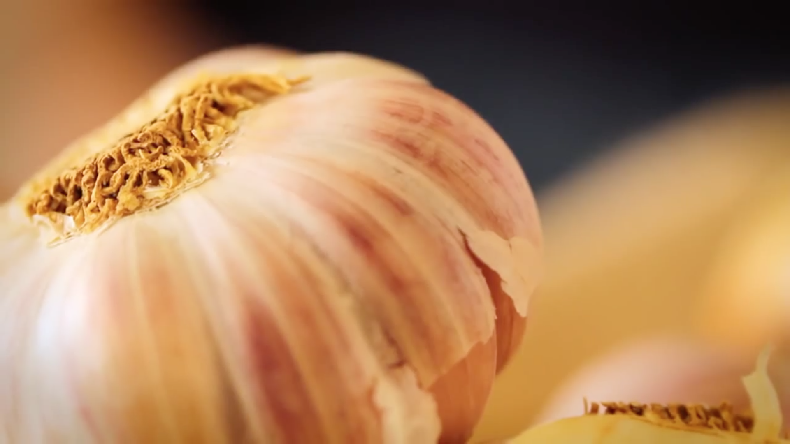 | 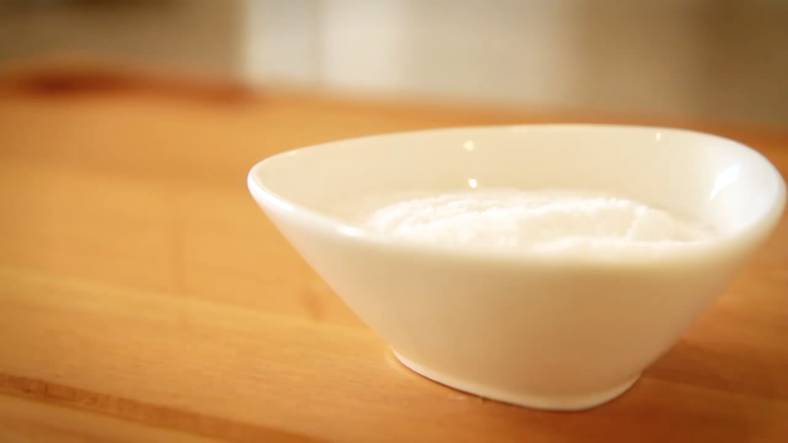 | 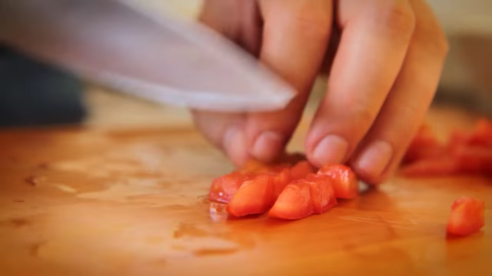 | 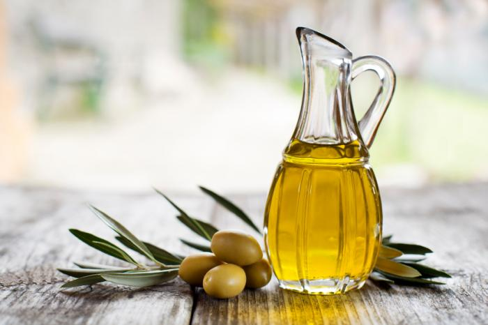 |
First thing is to chop the ribs in medium size pieces. Then, season them with salt, lemon juice and garlic. For better results, smash the garlic and completly cover the ribs. The lemon juice should be made of fresh lemons without the peel (avoid acidity). Set aside for approximately 1 hour.
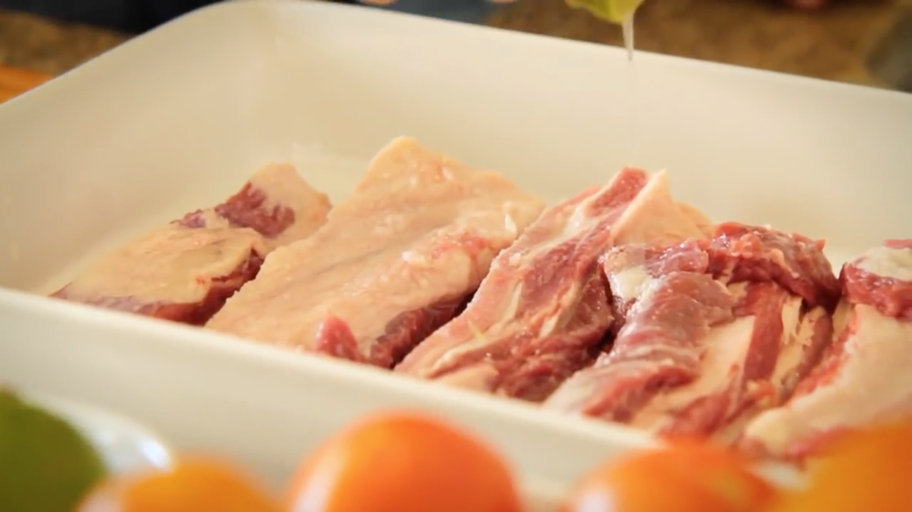Add the ribs in the pressure cooker over medium heat. Wait for them to brown uniformely. After that, include a little water, close the pressure cooker (lock the lid in place) and cook the ribs (maintain the pressure) for 40~45 minutes. By the end of this process, the ribs should be ready. Reserve the ribs and the obtained liquid.
Spread a little extra olive oil over, in order to avoid food sticking
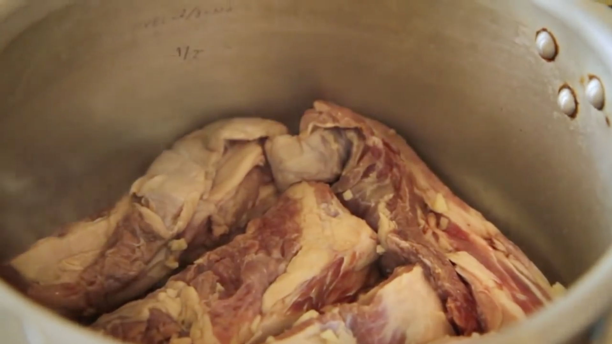Sauté chopped onions and tomatoes. Then, add the rice and the liquid from the cooked ribs. Complete with water if necessary, remember that different types of rice require distinct amount of water. Spread the ribs over the rice, so it can spread the flavour. After 8 minutes cooking in high pressure, it is ready to serve!
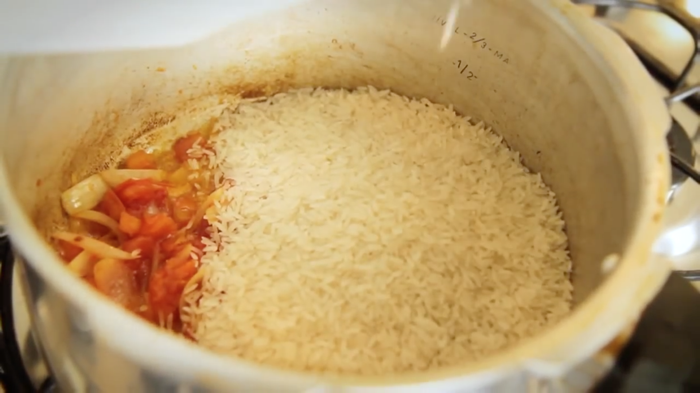